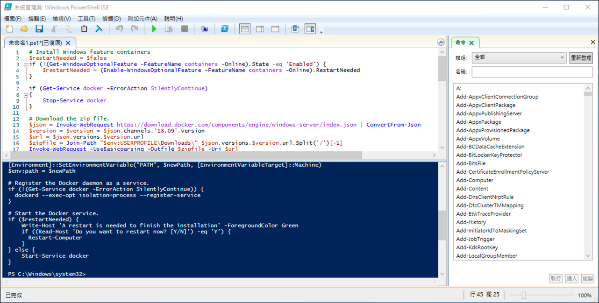
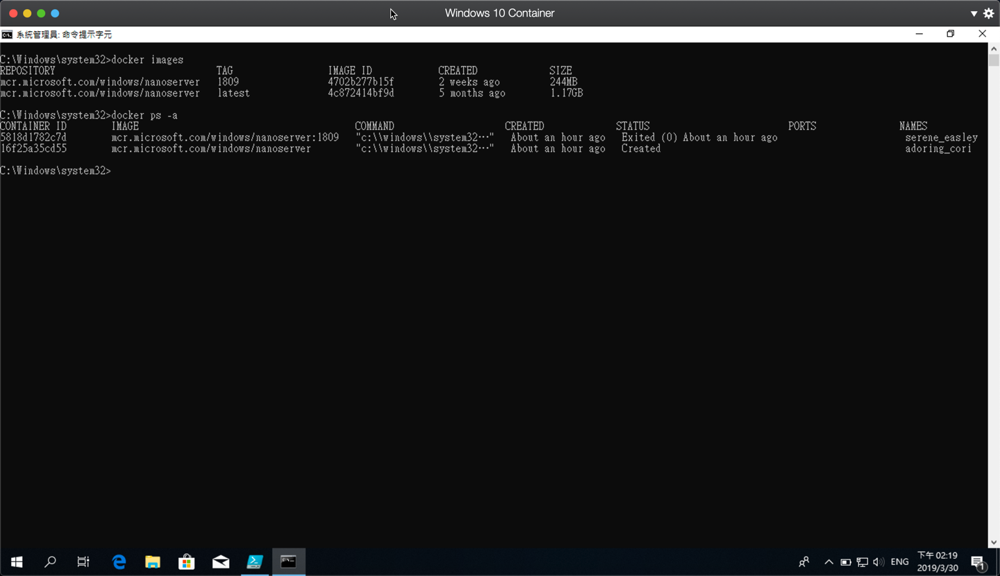

警告
- 此方法主要拿來測試遊玩用，不是正規官方做法，請勿拿來當作正視環境使用
- 此方法目前僅在 Windows 10 1809 上，不代表未來更新後，都可以正常
- 此寫文章的時間為 2019-03-30，若未來時間超過太久，請忽略掉這篇文章
前言
最近看到保哥的 Blog談到關於 Win 10 1809 的更新，針對 Container 開始支援 Process 隔離模式，老實說，看到是非常興奮的！！因為這個功能等了兩三年，終於有看到比較像樣的曙光，尤其像小弟使用 Macbook 的使用者。
首先，我們快速回憶一下，什麼是 Process 隔離模式：其實在 Linux 底下，都是透過 Process 隔離，來讓每一個 Container 自己獨立的運行，所以啟動速度才會那麼快。而在 Win 10 底下，一開始支援 Docker 的時候，其實是沒有 Process 隔離的，而採用的是 Hyper-V 隔離，當然，一方面，是為了支援 Linux，一方面也有更好的安全性。當然對於一般 User 來說，其實不是什麼問題，但對於 OSX 的 User 就會比較麻煩，因為通常 OSX 底下不能直將 run Windows Container，所以要跑 Windows Container，通常就必須透過 VMWare 或 Parallels 來安裝 Windows 10 ( 虛擬化 )，然後再啟動虛擬機的巢狀虛擬化技術，讓 Win 10 底下可以在啟用 Hyper-V。 ( 或是安裝 Windows Server，但有時礙於開發，Windows Server 還是有點不方便 )。而透過巢狀的方式來處理時候，Docker for Window 是很多問題的，官方也表明不 Support 的：所以當聽到 1809 可以支援 Process 隔離 ( Native Container )，意味著我們可以不用巢狀虛擬化，對小弟來說，是一個很棒的消息。
啟動 Process 隔離
這篇不會講標準的啟動方式，有興趣可以看保哥這篇，保哥已經寫得很詳細了，小弟這篇是旁門左道 XDDD
透過保哥的方式，小弟有測試過，也沒問題，但第一次還是要裝 Hyper-V，並且開啟巢狀虛擬化，事後關閉巢狀和 Hyper-V 是比較正確也比較好的做法
不使用 Hyper-V 安裝 Docker EE
那這篇是聊一聊旁門左道的方法 ( 我相信未來官方應該會提供比較好的方案 )，但要還是要注意，這方法不建議用於生產環境，僅適用於驗證與瞭解技術。
這個方法的來源，主要是透過國外大神的方式，他一樣也是希望不要安裝 Hyper-V，來安裝 Docker，但 Docker for Windows 一定要裝 Hyper-V，所以原作者就把想法想到 Docker EE 上去。
p.s Docker EE 的授權也要注意，原則上 Docker EE 的授權是綁在 Windows Server 上的。
底下是原作者寫的 Powershell，基本上使用 administrator 開啟 Powershell ISE 貼上，並執行即可，但要注意，中間可能會重新啟動電腦，重新啟動完後，要再把 docker Service run 起來 ( 或是再重新執行此此 PS 一次 )。
1 | # Install Windows feature containers |
如下圖，直接貼上執行就可以。

完成之後，使用 administrator 權限開啟 CMD，就可以正常執行 Docker 了，而且右下角不會有 Docker for Windows 的 ICON。

後記
還是強調，這不是正規流程，只是剛好看到國外有人這樣玩，就順手邊寫文章邊做一次，正規還是請等待官方，或是開啟 Hyper-V 來安裝，另外，國外大神文章也提到，因為 Win 10 和 Windows Server 是同樣核心，所以他想這樣玩玩看，沒想到真的可行：而需要重新寫 PS 來安裝，也是因為原本在 Windows Server 的安裝，會檢查 OS 版本是不是 Windows，大神也已經在 GitHub 發出 PR，但他說，上一個 PR 已經 1 年沒消息，所以不知道這個 PR 會不會被採納還不確定。
總之，不管怎樣，再未來，OSX 底下想使用 Windows Container 也會更加方便了 :)
p.s 測試過程中，小弟使用 nano server Latest 會出現錯誤，後來改用 1809 版本才正常，大家測試的時候也要注意一下。( Latest 看網站的版本為 Windows Server 2016 SAC，所以可能和 win 10 1809 的核心不符合. )